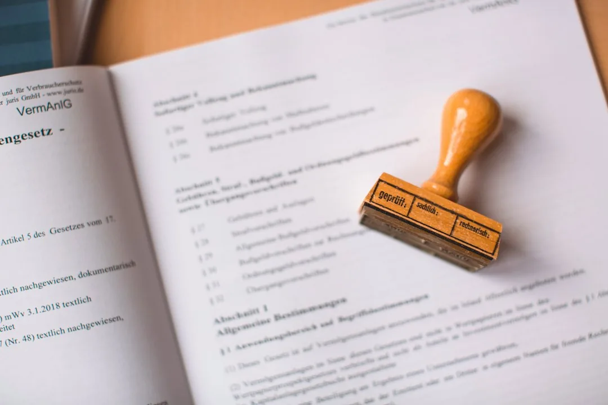

Concurso Anulado ou Suspenso: Quais os Direitos do Candidato
A notícia costuma chegar pelo grupo de estudos, antes de qualquer comunicado oficial: "suspenderam o concurso". Às vezes vem pior: "o concurso vai ser anulado". Para quem estudou um ano inteiro, passou em todas as etapas e já fazia planos para a posse, poucas frases dão tanto medo. E o medo é maior ainda para quem já está trabalhando no cargo e descobre que o concurso pelo qual entrou está sendo questionado.
Um concurso anulado não apaga automaticamente todos os direitos de quem participou dele. A Administração pode desfazer seus próprios atos, mas não de qualquer jeito, nem a qualquer tempo, nem sem ouvir quem será prejudicado. Também importa muito se o concurso foi suspenso, anulado ou revogado, porque essas três palavras, que muita gente usa como sinônimos, levam a consequências bem diferentes.
Este guia explica cada uma dessas situações, quem pode tomar essas decisões e o que acontece com quem já foi nomeado. Também mostra o que fazer com a taxa de inscrição e como agir em cada cenário. Um aviso antes: aqui o assunto é o concurso inteiro (ou uma etapa inteira) sendo desfeito. A anulação de uma questão da prova é outro tema, tratado na nossa página de recursos em concursos públicos.
Suspensão, anulação e revogação: qual a diferença
As três medidas interrompem o certame (outro nome para o concurso), mas por motivos e com efeitos distintos. Entender qual delas aconteceu no seu caso é o primeiro passo, porque é isso que define quais direitos você tem.
Concurso suspenso
O concurso suspenso fica parado, mas não acaba. Uma suspensão é provisória por natureza: ela congela o certame enquanto alguém investiga uma suspeita ou resolve um problema. Ao fim da suspensão, o concurso volta a andar do ponto em que parou ou, se o problema se confirmar, é anulado de vez.
Enquanto o concurso está suspenso, nenhum prazo de etapa do certame corre contra você. O prazo para contestar a própria suspensão, porém, corre normalmente. Mas também não acontece nada a seu favor: não há nomeação, não há resultado novo e, em geral, não há data para retomar. O seu papel nessa fase é acompanhar o motivo da suspensão e os documentos oficiais, não boatos.
Concurso anulado
O concurso anulado é desfeito (no todo ou em parte) porque houve uma ilegalidade. É o caso de fraude, vazamento de prova, regra do edital contrária à lei ou contratação irregular da banca. A ideia por trás é simples: um ato ilegal não deveria ter produzido efeitos, então a Administração o desfaz.
O Supremo Tribunal Federal (STF) resume essa regra na Súmula 473: a Administração pode anular seus atos ilegais e revogar os inconvenientes, "respeitados os direitos adquiridos" e sempre com a possibilidade de controle pelo Judiciário. Súmula é um enunciado curto que condensa o entendimento firme do tribunal. Direito adquirido é aquele que já entrou no patrimônio da pessoa e não pode ser tirado por decisão posterior. A mesma ideia aparece no art. 53 da Lei nº 9.784/1999, que regula o processo administrativo federal.
O ponto que interessa ao candidato é que um concurso anulado nem sempre cai por inteiro. Se o vício está numa etapa, a regra é anular só essa etapa e aproveitar o que foi feito corretamente. Um vazamento na prova discursiva, por exemplo, pode levar à reaplicação da discursiva sem tocar no resultado da objetiva.
Concurso revogado
A revogação não depende de ilegalidade. A Administração revoga o concurso quando ele deixa de ser conveniente: o órgão foi extinto, o orçamento acabou, as vagas deixaram de existir. É uma escolha de conveniência da Administração, e não de legalidade. Mesmo assim, ela não é livre: esbarra no direito de quem já foi aprovado.
O limite mais importante vem do próprio STF. No Tema 161, julgado com repercussão geral (o que obriga os demais juízes a seguir a mesma tese), a Corte decidiu que o aprovado dentro do número de vagas tem direito de ser nomeado e pode exigir isso na Justiça. A Administração só pode deixar de nomear diante de um fato novo, imprevisível, grave e necessário, explicado por escrito. Uma revogação que apenas "desiste" do concurso depois do resultado, sem esse tipo de justificativa, pode ser contestada.
| Medida | Por que acontece | Efeito sobre o candidato | Pode ser contestada? |
|---|---|---|---|
| Suspensão | Suspeita a investigar ou problema a resolver | Concurso parado, sem prazo para voltar | Sim, se não tiver motivo ou se durar sem justificativa |
| Anulação | Ilegalidade (fraude, vício no edital, banca irregular) | Desfaz o ato viciado e o que dependia dele | Sim, se a ilegalidade não existir ou se a anulação for maior que o vício |
| Revogação | Conveniência e oportunidade da Administração | Encerra o concurso, respeitando direitos adquiridos | Sim, especialmente para aprovados dentro das vagas |

Quem pode suspender ou anular um concurso
Três instituições costumam aparecer nas notícias de concurso anulado ou suspenso, e cada uma age de um jeito. Saber quem tomou a decisão ajuda a entender o que vem pela frente e onde contestar.
O próprio órgão e a banca
O órgão que abriu o concurso pode anular ou revogar seus atos por conta própria. Os juristas chamam esse poder de autotutela, que é a capacidade de a Administração corrigir os próprios atos sem precisar de um juiz. É o que acontece, por exemplo, quando a própria banca identifica vazamento e cancela a aplicação. Nessa hipótese, a contestação começa no próprio órgão, por requerimento ou recurso administrativo, e pode seguir para a Justiça.
O Tribunal de Contas
O Tribunal de Contas da União fiscaliza concursos de órgãos federais, e os Tribunais de Contas dos estados fazem o mesmo com concursos estaduais e municipais. A Constituição permite que eles fixem prazo para a correção de uma ilegalidade e, se ela não for corrigida, mandem parar a execução do ato (art. 71, IX e X). Na prática, é comum o tribunal mandar suspender o concurso até que o órgão ajuste o edital ou o contrato com a banca.
Essas decisões não costumam ser o fim do concurso. Muitas vezes, o órgão corrige o ponto questionado e o certame é retomado.
O Ministério Público e o Judiciário
O Ministério Público investiga denúncias de fraude e pode pedir ao juiz a suspensão ou a anulação do concurso, geralmente em ação civil pública, o processo usado para defender o interesse de toda a coletividade. A decisão final, nesse caso, é do Judiciário, e o candidato pode pedir para participar do processo quando o resultado o atinge diretamente.
Concurso anulado por fraude não torna culpado quem não fraudou. Quando a anulação vem de fraude, o candidato honesto perde o resultado sem ter feito nada de errado. Isso não dá direito a manter a vaga obtida numa prova contaminada. Mas pode dar direito a outras coisas: refazer a etapa ou, se o concurso cair por inteiro, ter a taxa devolvida. Em certos casos, também é possível ser indenizado por gastos causados pela falha da organização.
Concurso anulado após a posse: o que muda
Essa é a situação mais delicada, e a que mais gera dúvida. O servidor fez o concurso, foi nomeado, tomou posse, trabalha há meses ou anos. Então chega a notícia de que o concurso foi anulado. O que acontece com o cargo?
A resposta curta é que a Administração pode, sim, rever o ato. Mas um concurso anulado após a posse exige um procedimento muito mais cuidadoso do que a anulação de um certame que ainda está em andamento. Há pelo menos três proteções que o servidor precisa conhecer.
Contraditório antes da anulação
O STF decidiu, no Tema 138, que, quando um ato da Administração já produziu efeitos concretos, desfazê-lo exige processo administrativo prévio. Em outras palavras, o servidor tem direito de ser chamado, de conhecer o motivo e de apresentar defesa antes de perder o cargo.
Uma anulação que desfaz as nomeações de uma vez, por ato sem processo e sem defesa, é atacável por esse motivo, independentemente de o concurso ter tido vício ou não. Esse ponto costuma ser o primeiro a verificar.
Prazo de cinco anos para anular
A Lei nº 9.784/1999, no art. 54, fixa um prazo de cinco anos para a Administração federal anular atos que beneficiaram alguém, salvo se houver má-fé de quem foi beneficiado. Passado esse prazo, a Administração perde o direito de anular, e o ato se torna definitivo. Os juristas chamam essa perda de decadência. Muitos estados têm lei própria com regra parecida. Quando não têm, o Superior Tribunal de Justiça (STJ) admite aplicar a lei federal (Súmula 633).
Para o servidor que tomou posse de boa-fé, esse prazo é uma proteção importante. Se o concurso tem vício, mas a nomeação aconteceu há mais de cinco anos e o servidor não participou da irregularidade, a anulação pode ser barrada.
Há uma ressalva. O STF já entendeu que situações flagrantemente inconstitucionais não se tornam definitivas só porque o prazo passou, como o ingresso em cargo efetivo sem nenhum concurso. A discussão, portanto, depende do tipo de vício.
Boa-fé e salários recebidos
Mesmo quando a anulação é válida, o entendimento predominante é que o servidor de boa-fé não devolve os salários recebidos.
A tabela abaixo resume as proteções em cada estágio do concurso, e não só depois da posse. Ele trabalhou, e a remuneração corresponde a esse trabalho. Cobrar a devolução seria permitir que a Administração se beneficiasse do serviço sem pagar por ele.
| Situação do candidato | Principal proteção | Onde está a regra |
|---|---|---|
| Concurso em andamento, ainda sem nomeação | Anulação limitada à etapa viciada | Súmula 473 do STF e regra de aproveitar o que foi feito corretamente |
| Aprovado dentro das vagas, concurso revogado | Direito à nomeação, salvo situação excepcional motivada | Tema 161 do STF |
| Nomeado e empossado | Processo prévio com defesa | Tema 138 do STF |
| Empossado há mais de 5 anos, de boa-fé | Perda do direito de anular pelo fim do prazo de 5 anos | Art. 54 da Lei nº 9.784/1999 |
| Empossado de boa-fé, anulação válida | Não devolve salários recebidos | Jurisprudência sobre verba recebida de boa-fé |
E quem entrou por liminar?
Há um caso diferente, que costuma ser confundido com este. O candidato que entrou no cargo por decisão liminar (provisória) e depois perdeu a ação não está protegido pelo tempo no cargo. O STF decidiu, no Tema 476, que não vale aqui a teoria do fato consumado, a ideia de que uma situação que já dura muito tempo deve ser mantida. Por isso, quem pensa em seguir no concurso por liminar precisa entender bem o risco, como explicamos no texto sobre liminar em concurso público.
Se você já está no cargo e recebeu notificação sobre a anulação do concurso, o momento de agir é o do processo administrativo, antes da decisão final. O escritório Matheus Guerreiro acompanha servidores nessa fase, com defesa escrita, pedido de provas e análise do prazo de cinco anos. Se o seu caso é de aprovado dentro das vagas com o concurso revogado antes da nomeação, a orientação para o direito à nomeação segue a mesma lógica: quanto mais cedo o caso é analisado, mais caminhos ficam abertos.
Taxa de inscrição e outros prejuízos
Nem todo prejuízo de um concurso anulado está na vaga. Há também o dinheiro gasto com inscrição, deslocamento e hospedagem. O que dá para recuperar depende do motivo e do alcance da anulação.
Devolução da taxa de inscrição
Quando o concurso é anulado por inteiro ou revogado, a regra é a devolução da taxa. O aviso de cancelamento costuma informar como pedir. Se ele não informar, faça o pedido por escrito ao órgão ou à banca e guarde o protocolo. Sem resposta, o caminho costuma ser o Juizado Especial: o da Fazenda Pública, se o concurso for estadual ou municipal, ou o Juizado Especial Federal, se for federal. Em primeira instância, esses juizados admitem que a própria pessoa entre com o pedido, sem advogado, nas causas de menor valor.
Quando só uma etapa é anulada e reaplicada, a situação muda. O concurso continua e a inscrição segue valendo, então, em geral, não há o que devolver.
Despesas de viagem e outros danos
Se a prova foi cancelada no dia, por falha da banca, quem viajou para fazê-la teve um gasto que não teria tido. A Constituição prevê que o Estado responde pelos danos que seus agentes causam (art. 37, § 6º). No Tema 512, o STF decidiu que, quando a prova é cancelada por indício de fraude, a organizadora privada responde pelos danos materiais dos candidatos, como a taxa e o deslocamento, e o Estado responde de forma subsidiária, se a organizadora não pagar.
Para pedir, você precisa de comprovantes: passagem, nota do hotel, recibo de transporte. Sem eles, a chance cai muito. Danos maiores, como a perda de outra oportunidade de emprego, são mais difíceis de provar e dependem do caso concreto.
Organize as provas desde já. Salve o edital, o comprovante de inscrição, o cartão de confirmação, as publicações sobre a suspensão ou anulação e os recibos de qualquer despesa. Concursos anulados costumam gerar disputas que duram meses, e documento perdido no meio do caminho não volta.
Como agir diante de um concurso anulado ou suspenso
A reação certa depende do estágio em que o concurso estava e da medida tomada. Mas alguns passos valem para todos os casos.
1. Confirme a informação na fonte oficial
Procure o ato no Diário Oficial, no site do órgão ou no site da banca. Leia o motivo e quem tomou a decisão. Notícia de grupo de estudos e matéria de portal sobre concurso não substituem o documento. Muitas "anulações" que circulam são, na verdade, suspensões temporárias ou anulações de uma única questão.
2. Identifique o alcance
Pergunte: a medida atinge o concurso inteiro, uma etapa, um cargo ou uma cidade de aplicação? A resposta define o que você perdeu e o que ainda está de pé. Um concurso anulado só para uma das cidades de prova, por exemplo, não muda nada para quem fez a prova em outra.
3. Verifique se você teve chance de se defender
Se você já foi nomeado, confira se houve processo administrativo com notificação e prazo para defesa. Se não houve, esse vício pode ser suficiente para suspender os efeitos da anulação.
4. Acompanhe o processo que motivou a medida
Quando a suspensão vem do Tribunal de Contas ou de ação do Ministério Público, há um processo público. Acompanhá-lo permite saber quando o concurso pode ser retomado e se há espaço para você pedir para participar como interessado.
5. Avalie a via judicial no prazo
Se a anulação foi além do vício, se não houve defesa, ou se a revogação atingiu aprovados dentro das vagas sem justificativa, há caminho judicial. O mandado de segurança, ação rápida baseada só em documentos, tem prazo de 120 dias contados da ciência do ato que prejudicou você, o que em concurso costuma ser a publicação oficial. A ação comum tem prazo maior, mas a demora pesa, porque o concurso e as nomeações seguem.
O escritório atende candidatos e servidores de todo o país, com atendimento a distância. Há páginas dedicadas a quem está no Distrito Federal e na Bahia, com advogado especialista em concursos em Brasília e advogado especialista em concursos em Salvador.
Perguntas frequentes sobre concurso anulado
Concurso suspenso volta a acontecer? Muitas vezes, sim. A suspensão é provisória: ela para o concurso até que a causa seja resolvida. Quando o órgão corrige o problema apontado, o certame costuma ser retomado do ponto em que parou. Só vira anulação se a ilegalidade se confirmar.
Se o concurso for anulado, perco a nomeação? Depende do estágio. Antes da nomeação, a anulação válida desfaz o resultado. Depois da posse, a Administração precisa abrir processo com direito de defesa e respeitar o prazo de cinco anos da Lei nº 9.784/1999, salvo má-fé ou vício flagrantemente inconstitucional.
Concurso anulado após a posse obriga a devolver salário? Em regra, não, para o servidor de boa-fé. Ele trabalhou e recebeu pelo trabalho. A devolução só costuma ser discutida quando o próprio servidor participou da irregularidade.
Tenho direito à devolução da taxa de inscrição? Se o concurso for anulado por inteiro ou revogado, sim. Se apenas uma etapa for anulada e reaplicada, em geral não, porque o concurso continua e a inscrição segue valendo.
Fui aprovado dentro das vagas e o concurso foi revogado. O que fazer? O STF reconhece direito à nomeação de quem passou dentro das vagas, salvo situação excepcional, grave, imprevisível e motivada. Uma revogação sem esse fundamento pode ser contestada, de preferência dentro do prazo de 120 dias do mandado de segurança.
Quem decide se o concurso será anulado? O próprio órgão pode anular por autotutela. O Tribunal de Contas pode mandar suspender e, se a irregularidade não for corrigida, sustar o concurso. E o Judiciário decide nas ações movidas pelo Ministério Público ou por candidatos.
Concurso anulado não encerra a discussão
Suspensão, anulação e revogação parecem a mesma coisa para quem está do lado de fora, mas cada uma tem regras próprias. A suspensão é temporária, a anulação precisa de uma ilegalidade real e deve se limitar ao que está viciado, e a revogação esbarra no direito de quem passou dentro das vagas. Quem já tomou posse conta ainda com o processo prévio, o prazo de cinco anos e a proteção da boa-fé.
A pior reação é desistir pelo susto. Antes de qualquer coisa, confirme o ato oficial, descubra o alcance da medida e guarde os documentos. Com isso em mãos, fica claro se há algo a contestar.
Se o seu concurso foi suspenso, anulado ou revogado, ou se você é servidor e recebeu notificação sobre a anulação, o escritório Matheus Guerreiro pode analisar o seu caso. Atuamos com recursos em concursos públicos e na defesa de servidores em todo o Brasil, com atendimento a distância. Reúna o edital, o ato que suspendeu ou anulou o concurso, o seu resultado e, se já estiver no cargo, o termo de posse e qualquer notificação recebida.